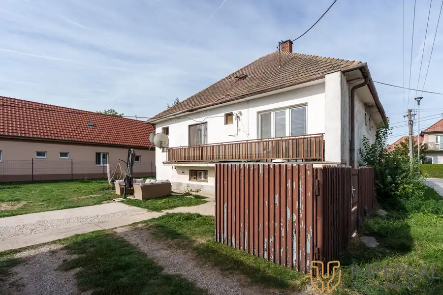
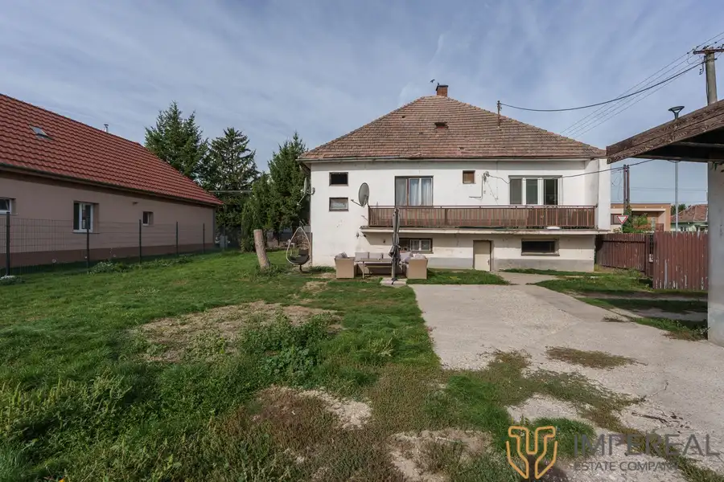
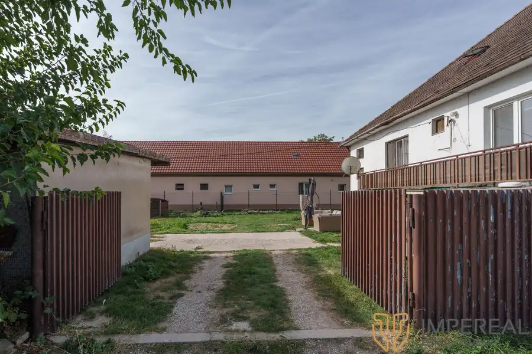
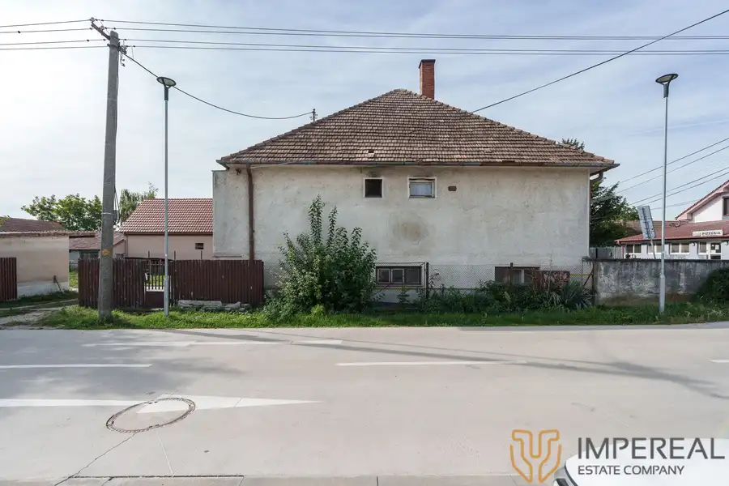

Na predaj priestranný rod.dom s garážou - Hviezdoslavov
Hviezdoslavov




- Plocha796 m²
- StavČiastočná rekonštrukcia
O nehnuteľnosti
IMPEREAL exkluzívne ponúka na predaj priestranný kompletne podpivničený 3-izbový rodinný dom s garážou a záhradou, ktorý je postavený na rovinatom pozemku s celkovou výmerou 796 m², zastavaná plocha 405m2, záhrada 391m2. DISPOZÍCIA: vstupná predsieň, hala, po ľavej strane je obývačka a spálňa, na konci haly kúpelňa, samostatná toaleta, po pravej strane sa nachádza priestranná kuchyňa s výstupom na balkón, špajza a detská izba. STAV NEHNUTEĽNOSTI: dom je zdravý, suchý v obývateľnom stave, avšak vyžaduje kompletnú rekonštrukciu.Predpokladaný odhad renomovanou stavebnou firmou je cca 40 000,-eur + materiál, nakoľko dom je suchý , zdravý, vrátane krovu a nevyžaduje náklady navyše. Postavený je z tehly, napojený na elektrinu a plyn, vykurovaný plynovým kotlom, ale je možnosť využívať aj kúrenie na tuhé palivo. Voda je vedená zo studne, na pozemku sa nachádza žumpa. V blízkej budúcnosti obec plánuje v tejto časti zaviesť kanalizáciu. VÝHODY: • vstup na pozemok z dvoch strán• vlastná studňa • kompletne podpivničený• povala - možnosť prerobenia na dvojgeneračný dom• pozemok ponúka : parkovanie pre viac áut, vybudovanie záhradky, bazénu, skleníka atď..• výborná dostupnosť do Bratislavy: okrem vlakového spojenia rýchle napojenie na rýchlostnú cestu R7 s možnosťou napojenia na diaľnicu D4 v oboch smeroch. • vhodné ako investícia, kúpou voľnýLOKALITA: Obec Hviezdoslavov patrí medzi vyhľadávané, rýchlo dostupné lokality v okolí Bratislavy. Hlavná ulica ponúka pokojné bývanie v rodinnom prostredí v obci s kompletnou občianskou vybavenosťou: školy, škôlky, obchody, reštaurácie, pizzéria, pohostinstvá, potraviny ,Terno, Billa. Priamo v obci sa nachádza aj lekáreň a zdravotné stredisko. KONTAKT A OBHLIADKY: Volárová Miriam t.č. 0902 153 108, volarova@impereal.sk , možnosť HÚ.Uvedená cena je bez ďalších poplatkov a zahŕňa:1. poradenstvo od skúseného hypotekárneho špecialistu, ktorý Vám pomôže zvládnuť celý proces po finančnej stránke2. kompletný sprostredkovateľský a právny servis vrátane všetkých poplatkov s tým súvisiacich ( vyhotovenie zmluvy o budúcej zmluve, rezervačná zmluva, vypracovanie a autorizácia kúpnej zmluvy a prípadné dodatky a komunikácia priamo s advokátom,vyhotovenie návrhu na vklad, protokol o odovzdaní a prevzatí nehnuteľnosti, elektronické podanie dokumentov spojených s prevodom vlastníckeho práva na kataster nehnuteľností a s tým spojený skorší zápis vlastníckeho práva max. do 20 dní
Parametre
- Druh
- Rodinný dom
- Druh domu
- Klasický dom
- Dátum zverejnenia
- 03. 10. 2026
- Energetický certifikát budovy
- nie je
- Plocha pozemku
- 0 m²
- Počet balkónov
- 1
- Počet izieb / miestností
- 3
- Počet kúpeľní
- 1
- Počet nadzemných podlaží
- 1
- Počet spální
- 1
- Rok kolaudácie
- 1985
- Stav nehnuteľnosti
- Čiastočná rekonštrukcia
- Telekomunikácie
- Optická sieť
- Terén pozemku
- Rovinatý
- Typ
- Predaj
- Typ konštrukcie
- Tehlová
- Vybavenie
- Technická miestnosť, Sklad, Balkón, Pivnica, Garáž
- Vykurovanie
- Ústredné
- Zastavaná plocha
- 405 m²
- Úžitková plocha
- 796 m²